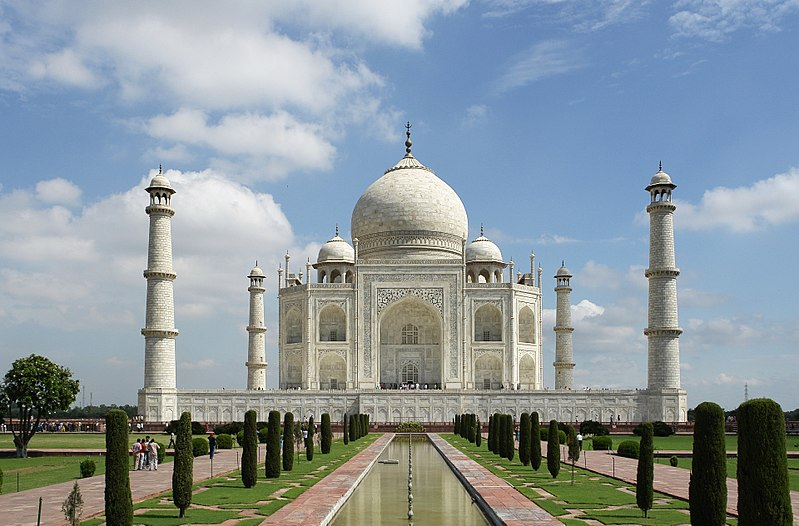

HOME
Taj Mahal

About
The Taj Mahal (meaning Crown of the Palace) is an ivory-white marble mausoleum on the south bank of the Yamuna river in the Indian city of Agra.
It was commissioned in 1632 by the Mughal emperor, Shah Jahan (reigned 1628–1658), to house the tomb of his favourite wife, Mumtaz Mahal.
The tomb is the centrepiece of a 17-hectare (42-acre) complex, which includes a mosque and a guest house, and is set in formal gardens bounded on three sides by a crenellated wall.
Construction of the mausoleum was essentially completed in 1643 but work continued on other phases of the project for another 10 years.
The Taj Mahal complex is believed to have been completed in its entirety in 1653 at a cost estimated at the time to be around 32 million rupees, which in 2015 would be approximately 52.8 billion rupees (US$827 million).
The construction project employed some 20,000 artisans under the guidance of a board of architects led by the court architect to the emperor, Ustad Ahmad Lahauri.
The Taj Mahal was designated as a UNESCO World Heritage Site in 1983 for being "the jewel of Muslim art in India and one of the universally admired masterpieces of the world's heritage". Described by Nobel laureate Rabindranath Tagore as "the tear-drop on the cheek of time",
it is regarded by many as the best example of Mughal architecture and a symbol of India's rich history. The Taj Mahal attracts 7–8 million visitors a year. In 2007, it was declared a winner of the New7Wonders of the World (2000–2007) initiative.